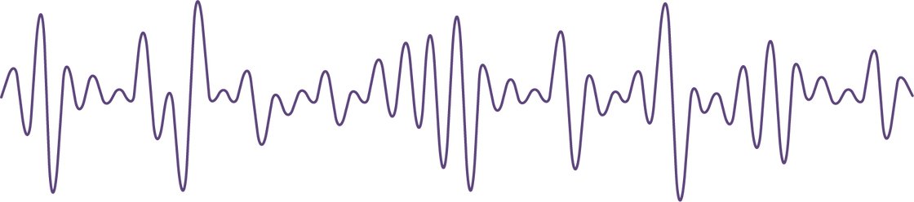

Frequently Asked Questions
What is a podcast?
A podcast is a program episode made available in digital format for download over the Internet. Podcasts are primarily an audio medium, which is reflected in the term itself, a portmanteau of "iPod" and "broadcast" coined in 2004. The term used to refer to an episodic series of digital audio files that users can download to a personal device or stream to listen to at a time of their choosing.

Why do you listen to them?
People listen to podcasts for pleasure: engaging hosts, humor, and a relaxing escape. They’re drawn to stories—true crime, fiction, interviews—that entertain and inspire. Others rely on podcasts for news and analysis that add context beyond headlines. Many use them for language learning, improving listening, vocabulary, pronunciation, and confidence.
When and where do people listen to podcasts?
People listen to podcasts during moments when their eyes are busy but their minds are free—commutes, workouts, cooking, cleaning, or winding down at night. They tune in at home, in the car, on public transit, at the gym, or while walking outside. Flexible episodes make listening easy in short bursts or long stretches.
Places to Listen
There are many different tools and apps to listen to podcasts. Here are some of the most common:
Some initial recommendations:
These are some of my favorite podcasts to listen to.
-
My Favorite Podcast: Moral of the Story
"Moral of the Story" is a podcast hosted by Stephanie Soo and her husband, typically featuring deep dives into unhinged, wild, and intense true scandals from around the world. It acts as a less intense alternative to her other podcast, Rotten Mango, often focusing on social scandals or shocking real-life stories.
-
My Favorite News Source: NPR's Up First
Up First is a popular daily news podcast from NPR that provides a concise, 10–15 minute overview of the top three news stories, designed to be heard in the morning.
-
My Favorite Japanese Podcast: Yuyu's Japanese Podcast (YUYUの日本語)
YUYUの日本語Podcast (Yuyu no Nihongo Podcast) is a popular,, natural-paced podcast designed to help intermediate Japanese learners (around JLPT N4-N3 level) improve their listening skills. Hosted by Yuyu, it features engaging monologues and conversations about Japanese history, culture, language tips, and daily life topics, often with available transcripts.
What if I want my own favorite?
Tip 1
Get recommendations from your friends
Tip 2
Search online for a topic you enjoy
Tip 3
Try listening to something!
You can't really know if you'll enjoy a podcast until you try listening to it!